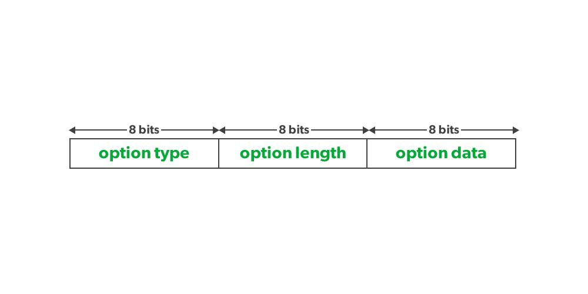

在使用Go实现ping工具那一篇文章中，我们自己实现了ping工具的基本功能，我们也了解了ping底层实现的原理。读者@ZerOne提出一个问题：能不能实现单向跟踪路由的功能，类似 ping -R一样，从A端tracert B端，同时显示B端到A端的路径？
Record Route 背景知识
我先前没有用过ping的-R参数，ZerOne这么一问，我感觉很有趣。因为最近两年我一直在做网络相关的工作，特别是网络监控的能力，如果如ZerOne说的，ping如果有这个能力，可以很好的用在我们网络监控上，所以我迅速在网上搜索这相关的信息，并使用Go实现类似的功能,最终形成了这一篇文章，太长不看的话：这个问题的答案是，行，但不现实。
这也算是Go高级网络编程系列中插播的一篇吧，另外一个读者评论批量发送包的时候提出了sendmmsg和sendv(应该是想说writv)的区别，我会在下一篇文章介绍，这两篇算是插播的知识点。欢迎大家一起探讨高级网络编程的知识，私信我或者加入Go高级编程研讨群进行交流。
首先man ping看它的帮助文档中对-R参数的介绍:
-R Record route. Includes the RECORD_ROUTE option in the ECHO_REQUEST packet and displays the route buffer on returned packets. Note that the IP header is only large enough for nine such routes. Many hosts ignore or discard this option.
-R 记录路由。在 Echo请求包中包含
RECORD_ROUTE选项，在返回的包中显示缓存的路由。注意IPV4的头部只能最多存9个这样的路由地址。很多节点会忽略或者丢弃这个选项。
Mac OS的ping工具已经把这个选项标记为弃用了，即使你添加了这个参数，也相当于一个no-op操作。
RR的功能是利用ipv4 header的option实现的。
普通的ipv4 header是20个字节(图中每一行是4个字节,32bit),但是协议还设置了Option,可以扩展它的基本功能。
IHL是4个bit,代表IP头的长度(行数)，因为4个bit最大也就是15，所以ipv4的header最大也就是 15 * 4byte = 60 byte，留给option的也只有40 byte (60 byte - 40 byte)。
Option的格式采用TLV格式定义，第一个byte是Type, 第二个byte是此Option的长度Length，剩余的字节包含Option的值Value:

rfc791中定义了IPv4的几个选项：
其中 record route(RR)就是本文要讨论的对象。
IPv4 record route（RR）选项指示路由器在数据包中要记录它们的IP地址。 RR是Internet协议的标准部分，可以在任何数据包上启用。与traceroute类似，RR记录和报告从源到目的地沿着Internet路径的IP地址，但它比traceroute具有几个优点。例如，RR可以逐跳地拼接回到目的地的反向路径，这对于traceroute和其他传统技术来说是不可见的；并且它可以发现一些不响应traceroute探测的跳数。
但是这也带来了安全问题，尤其是云服务当道的今天。如果从云机房的IP包开启了这个选项，那么它经过的云机房路由就会到云机房外，就会把云服务商的网络架构暴露出来，甚至黑客还可以利用其它选项，让流走特定的设备实现攻击，同时每个数据包还额外增加了一些数据多占带宽，吃力不讨好，所以你的机器是购买的云虚机的我话，ping -R大概率都被丢弃掉了，可能在源机房，也可能在目的机房。
特别是，RFC 1704强调了在互联网协议中的选项字段可能被滥用的风险。RFC 1704认为，记录路由选项可能会被用于追踪信息的来源和目的地，因此需要采取一些措施，以确保该选项不被滥用。该文档建议对记录路由选项进行限制和过滤，同时提高对它的安全意识和理解。
比如我在腾讯云的云虚机做测试，8.8.8.8忽略了这个选项,1.1.1.1和github.com丢弃了请求，127.0.0.1返回了这个选项:
但是论文The record route option is an option!却提出一个新的观点，认为RR非常具有网络测量的潜力，并且可以与traceroute结合使用来增强对网络拓扑结构的理解。这篇论文呼吁重新评估RR选项潜力，并探索新的使用方式。
以上就是Record Route选项的背景知识。接下来我们就在原来我们实现的ping程序上加上RR的功能
使用 Go实现 RR 功能
解析 RR 选项
首先我们先做一个准备工作，如果我们收到一个IPv4包，我们需要解析出它的选项。可能包括多个选项，我们需要按照TLV的格式把它们都解析出来。
解析选项我们还是使用的gopacket包,首先解析T, 根据T的类型决定解析L和V：
|
|
我们只关注RR选项，它的T是0x07,它的第三个byte是一个从1开始的指针，指向存放路由IP地址的下一个字节，初始是4，也就是它后面的那个字节，我们需要解析出它已存放的IP地址:
|
|
解析option的代码已经完成，接下来的工作就是在发送icmp Echo请求的时候，把RR设置上。并且有幸收到回包的话，你需要把RR中的路由列表打印出来。
实现带RR功能的ping
和先前我们实现的ping工具不同，我们需要再深入一下。因为先前的ping实现我们直接发送ICMP的包，不需要IPv4这一层，现在既然我们需要设置IPv4的option,我们就得手工构造IPv4的包，发送IPv4的包有多重途径，我本来在这个系列中就要讲如何发送IPv4的包，因为插入了这一篇介绍RR的文章，所以在这篇文章我就介绍其中一种方式，其他方式请关注鸟窝聊技术微信公众号。
我们可以使用pc, err := ipv4.NewRawConn(conn)，把net.PacketConn转换成 *ipvr.RawConn ，就可以发送和接收带IPv4 header的包了。
重点是构造IP header, 设置RR选项最多支持9个路由(32 byte + ptr), ptr的初始值设置为4：
|
|
我们使用下面的语句收取回包数据:
|
|
它可以读取ip header以及payload数据(ICMP回包)。
如果检查收到的数据是对应的icmp回包，我们就可以使用一开始我们准备的解析数据，解析出option：
|
|
完整的代码如下:
|
|
测试一下,可以从回包中收到RR信息：